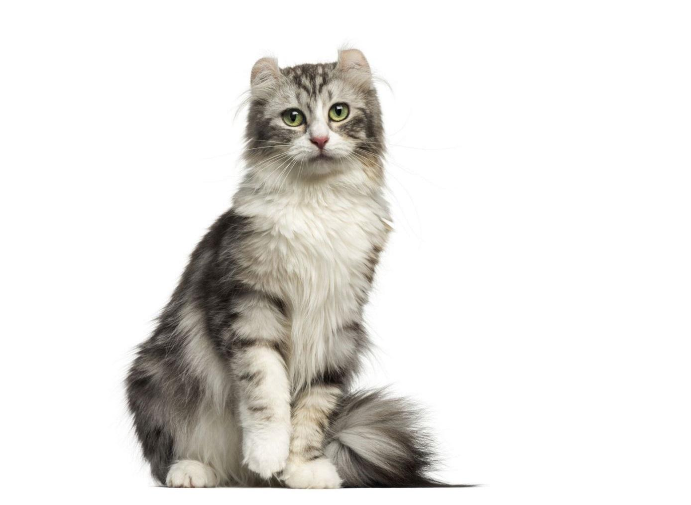

Se desarolla en California en la década de los 80, pues fue en el año 1981 cuando una pareja de criadores encontró un gatito de orejas curvadas y decidieron adoptarlo. En la primera camada que tuvieron aparecieron otros dos ejemplares con estas características orejas, siendo uno de ellos de pelo corto y otro de pelo largo. Esta nueva raza y sus particulares orejas crearon furor y muchos fueron los criadores y aficionados interesados en obtener ejemplares de curl americano. Debido a esa fama y a la rápida expansión de la raza esta no tardó en ser reconocida por organismos oficiales.
Son de tamaño mediano, con un peso de entre 3 y 5 kilogramos, siendo algo más reducido en las hembras que en los machos, la altura a la cruz es de entre 45 y 50 en machos y 40 y 45 en hembras. Su cuerpo es alargado y bastante musculoso, con siluetas rectangulares. La cabeza de estos felinos presenta forma de cuña, siendo más larga que ancha y con un hocico redondeado de mentón firme. Sus ojos son grandes y redondeados, con un color que suele ser amarillos o verdes, aunque dependiendo del patrón del pelaje pueden observarse otros como el azul. Y así llegamos al rasgo más característicos y distintivo de los gatos curl mericanos: sus orejas. Son muy curiosas ,ya que lucen curvadas, con un arco más o menos pronunciado que puede ser de entre 90 y 180 grados. Una curiosidad es que cuando nacen estos gatos las orejas son rectas, cruzándose a lo largo de la primera semana de vida. Además esta curvatura no será definitiva hasta que el animal alcance los 5 meses de edad.

Son muy cariñosos y tranquilos. Les gusta la convivencia tanto con humanos como con otros animales, por lo que es perfecto si tenemos otras mascotas. Eso sí deben estar siempre correctamente socializados. También es ideal en caso de familias con niños, ya que son gatos divertidos pero a la vez pacientes y no son nerviosos. Podemos preparar juegos compartidos o dejar que sean los niños os que se los inventen, así ambos disfrutarán tanto del antes como del durante de esos ratos de juego. Se adaptan con facilidad a diversos entornos, tanto a pisos o casas con parcelas o casas con jardín. A su vez son inteligentes y bastante curiosos, mostrándose interesados por situaciones nuevas y desconocidas.

Será necesario que se lo cepillemos al menos 1-2 veces por semana, así evitaremos los enredos, la acumulación de suciedad y detectaremos cualquier parásito o anomalía. Si lo habituamos desde su etapa de cachorro, podremos bañar a nuestro gato cada uno o dos meses, sin embargo, debemos recordar que los gatos se limpian a sí mismos, por lo que en principio no es un procedimiento necesario. Debido a la curiosa forma de sus orejas tendremos que prestar especial atención al cuidado y mantenimiento de las mismas. Pues al estar curvadas suele acumularse más suciedad externa, por lo que se recomienda limpiar las orejas del gato con regularidad empleando para ello productos óticos de uso veterinario.

Son habitualmente sanos y robustos, sin embargo, hay que tener en cuenta que al ser una raza relativamente reciente puede que no se hayan detectado aún posibles patologías congénitas, ya que por el momento no se han registrado. Como hemos mencionado los curl americanos pueden tener el pelo semilargo, y es en estos casos cuando pueden darse las peligrosas bolas de pelo o tricobezoares, que pueden desencadenar una serie de consecuencias negativas para la salud de nuestro felino. Para evitarlas se recomienda el cepillado regular o el uso de productos como la malta o el aceite de parafina.